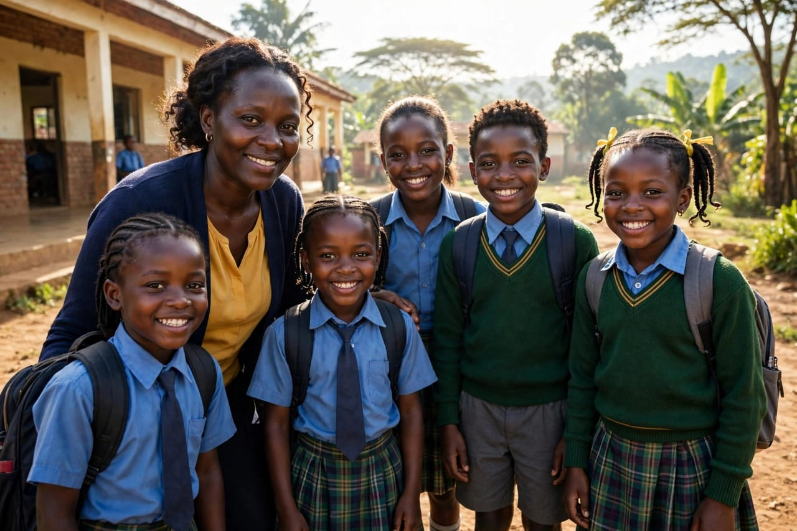
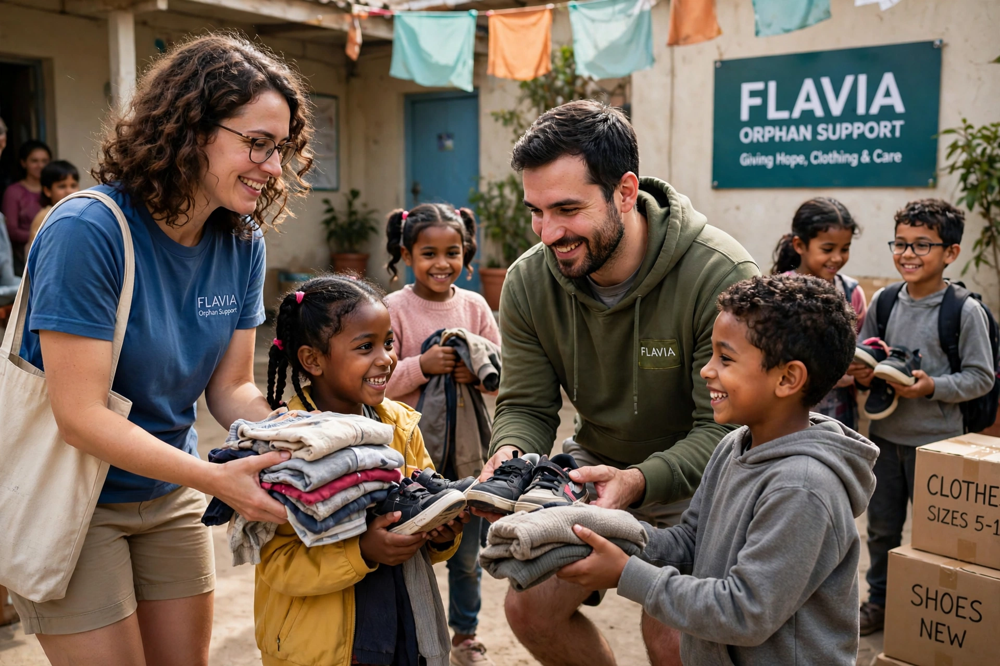
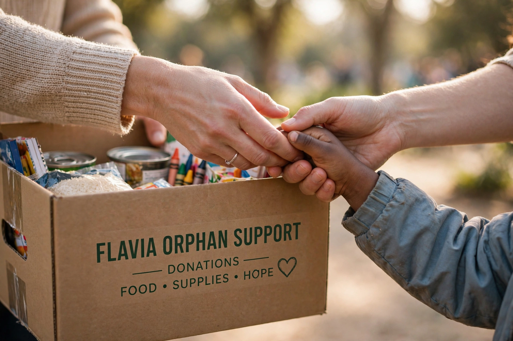
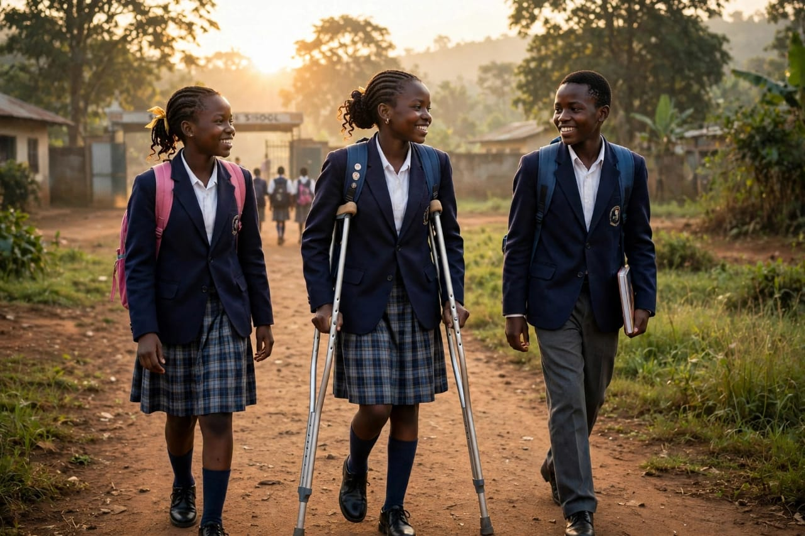
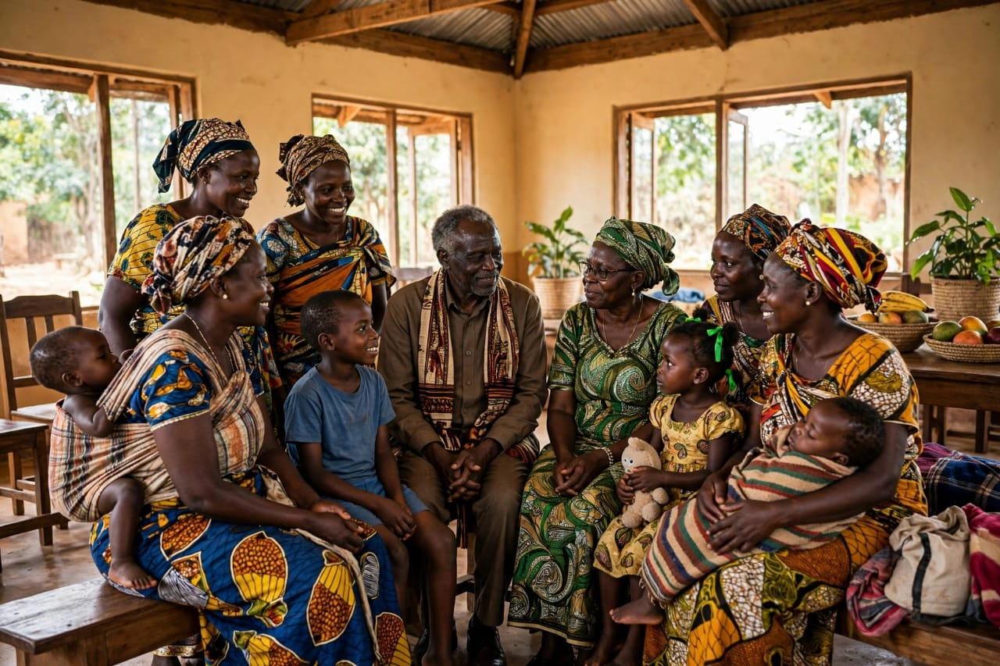
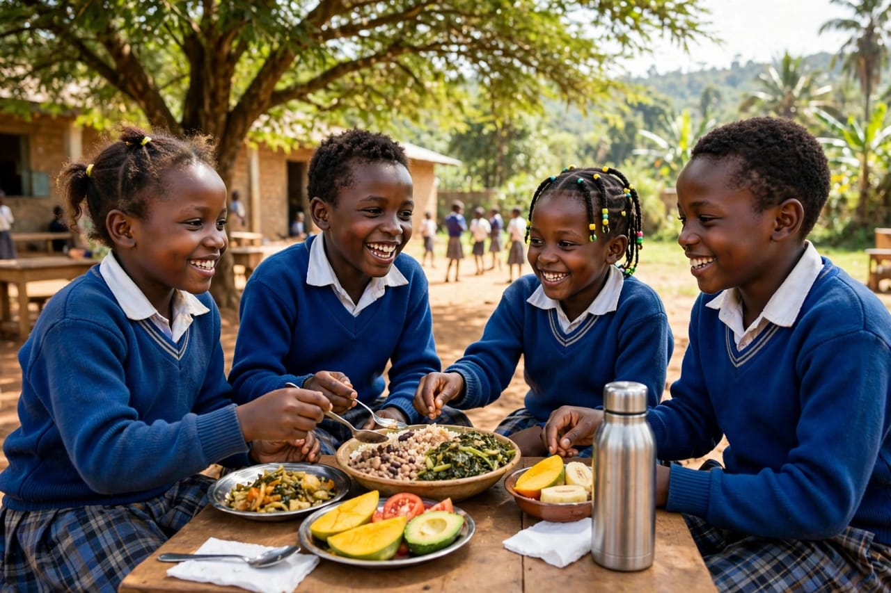
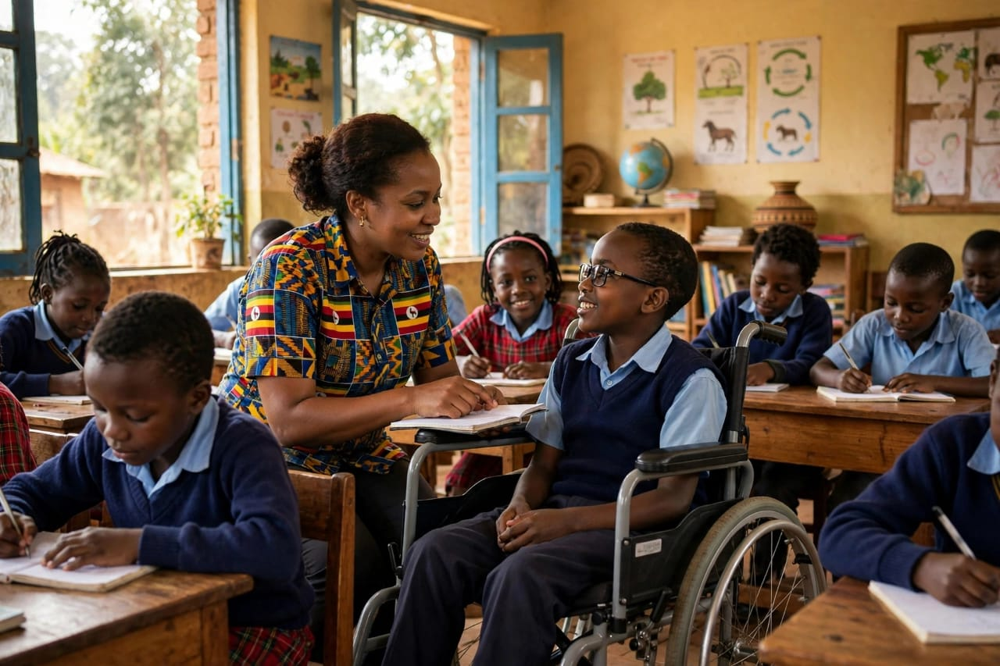

🌻 Flavia's Children of Hope Foundation — TororoProject by YUBU KIRIZA

📍 TORORO, UGANDA • IN FORMATION • REGISTRATION IN PROGRESS
Flavia's Children of Hope Foundation
Nurturing Every Child, Restoring Their Smile. A proposed Christian child-focused charitable organisation in Tororo, Uganda, inspired by the life journey of its founder, Asinde Flavia.
Founder: Asinde Unice Flavia | Location: Tororo, Uganda | Status: Proposed / In Formation | Website Project by YUBU KIRIZA
💛 Our Founder's Story
Flavia's Children of Hope Foundation is inspired by the life journey of its founder, Asinde Flavia.
From personal experience, she knows what it means to face barriers — to be left out, to struggle to access education, health care and opportunity — and she also knows what it means when someone believes in you, supports you, and gives you a chance.

That experience became a calling: to make sure children with disabilities and other vulnerable children in Tororo and Uganda are not left behind. To turn compassion into responsible action — working with families, communities and partners so that every child is loved, protected, included and given opportunities to learn, grow and live a dignified life.
"Every child matters. Every child deserves dignity, opportunity and a safe environment in which to grow."

🛡️ Protection, Inclusion & Advocacy
Promoting inclusion, dignity and protection of children with disabilities in schools, churches and communities.
✨ Vision, Mission & Values
Our Vision
A society where every child, regardless of disability, family background or economic circumstances, is loved, protected, included and given opportunities to learn, grow and live a dignified life.
Our Mission
To nurture, protect, educate and empower children with disabilities and other vulnerable children in Tororo and Uganda through love, inclusive support, community partnership and Christian values.
Our Values
Love — Every child is precious and loved by God.
Dignity — Every child deserves respect, not pity.
Inclusion — No child left behind because of disability or poverty.
Protection — Safety of children comes first, always.
Integrity — Honest, transparent use of every donation.
Compassion — Serving with kindness and humility.
Accountability — We report what we receive and what we do.
Hope — Believing every child can grow, learn and smile again.
🤲 What We Do — Our Programmes

📚 Education Support
School fees, scholastic materials, uniforms and support to help children enrol, stay in school and learn.

🏥 Health & Rehabilitation Referrals
Referrals to licensed health professionals and rehabilitation services. We do not diagnose or prescribe — we refer to qualified providers.
♿ Assistive Devices
Support to access wheelchairs, crutches, hearing aids and other appropriate devices through competent providers.

🍲 Food & Basic Needs
Essential support for eligible households so children can learn, grow and live with dignity.

👨👩👧 Family & Community Support
Working with caregivers, schools, churches, health workers, disability organisations and local leaders in Tororo.
🛡️ Protection, Inclusion & Advocacy
Promoting inclusion, dignity and protection of children with disabilities in schools, churches and communities.
📸 Photo Gallery — Hope in Action
Illustrative photos showing the kind of inclusive, joyful community we are building in Tororo.
🇺🇬 Why Uganda — Why Tororo — Why Now
Many children with disabilities and other vulnerable children in Uganda face barriers that other children do not face:
Difficulty accessing school because of fees, distance, stigma or lack of inclusive support
Difficulty accessing health care, rehabilitation and assistive devices
Poverty in households that makes food, uniforms and basic needs hard to afford
Stigma and exclusion in communities, schools and sometimes even families
Caregivers who love their children but lack information, support and resources
Tororo is our starting point. We believe if we start small, honestly, and with proper safeguarding and accountability in Tororo, we can learn what works and grow responsibly.
Our approach: Start small. Listen to families. Work with existing schools, health providers and churches. Do not promise what we cannot deliver. Report honestly — including challenges.
⭐ First-Year Pilot Project: EVERY CHILD MATTERS — Tororo
Purpose: To test a small, accountable programme that improves access to education, health-related support and essential services for children with disabilities and other vulnerable children.
Proposed initial reach: Up to 30 children, subject to needs assessment, safe referral arrangements and confirmed funding. This is a planning target, not a promise of service already delivered.
Proposed Activities
Beneficiary identification and needs assessment with families
Education support — fees, materials, uniforms where needed
Referrals to health and rehabilitation services
Support to access appropriate assistive devices
Food and essential needs for eligible households
Community outreach and caregiver guidance
Monitoring, reporting and learning
Pilot Budget — UGX 33,000,000
Budget Item
Amount (UGX)
Education Support
8,000,000
Medical & Rehabilitation Assistance
7,000,000
Assistive Devices
8,000,000
Food & Basic Needs
4,000,000
Community Outreach & Assessments
3,000,000
Administration, Accountability & Reporting
3,000,000
Total
33,000,000
Initial estimate only — not yet based on supplier quotations. Final budget to be validated after needs assessment and quotations.
A credible foundation needs independent oversight, clear rules and honest reporting.
Board oversight: A functioning board that meets regularly and records decisions
Approved budgets: No spending without an approved budget
Separation of duties: Separate approval, payment and reconciliation
Two approvals: At least two approvals for payments above board-approved threshold
Organisational bank account: Foundation money never mixed with personal funds
Conflict of interest: Board and staff declare interests and step aside where there is a conflict
Financial reporting: Periodic financial statements, reconciled accounts and annual reports
Independent review / audit: Where required by law or donors
Data protection: Personal information of children and donors stored securely and used only for agreed purposes
Status: Founders, board members, constitution, legal structure and headquarters to be confirmed with URSB and NGO Bureau. We do not claim registration until it is approved.
🛡️ Child Safeguarding — Our Promise
Child safeguarding will be in place before any activity with children begins. We prohibit abuse, exploitation, neglect, harassment and inappropriate conduct.
Written child-protection / safeguarding policy + code of conduct for all staff, volunteers and visitors
Safe recruitment and reference checks
Parent/guardian consent + age-appropriate child agreement before any activity, photo or story
No photo, name, medical information or story used for fundraising without valid informed permission
Secure storage of children's personal information
Clear, confidential complaints and reporting pathways — children and adults can report safely
Immediate action on any concern, with referral to appropriate authorities where required
If you have a safeguarding concern: Contact us at yubukiriza0016@gmail.com / +256706478418. Do not stay silent. Every child must be safe, respected and heard.
📋 Registration Roadmap — How We Become Legal
Confirm the name: Check availability of 'Flavia's Children of Hope Foundation' and abbreviation with URSB
Confirm the founders: Identify founding members and agree roles and commitment
Choose legal structure: Obtain advice on appropriate nonprofit incorporation route and NGO Bureau requirements
Confirm headquarters: Tororo, Uganda — select actual registered office and first operating district
💼 Donor-Readiness & Fundraising — How We Will Use Donations
We are committed to responsible fundraising. We will:
Use donations only for the purpose agreed with the donor
Keep accurate records and receipts for every donation
Provide clear reports on use and impact — including delays and challenges
Never use photos or stories of children without valid permission
Never claim registration, tax benefits or results we have not yet achieved
Return / re-agree donations if the agreed purpose cannot be delivered, where required
What donors can support: Funding, technical assistance, in-kind contributions (scholastic materials, assistive devices, food), or organisational partnerships.
✉️ A Letter To Our Future Partners
Subject: Partnership Opportunity — Supporting Children with Disabilities and Vulnerable Children in Tororo, Uganda
Dear Potential Partner,
We are developing Flavia's Children of Hope Foundation (FCHOF), a proposed Christian child-focused charitable organisation in Tororo, Uganda inspired by the life journey of its founder, Asinde Flavia.
Our vision is a society where every child, regardless of disability, family background or economic circumstances, is loved, protected, included and given opportunities to learn, grow and live a dignified life.
We intend to begin with a carefully managed pilot project, 'Every Child Matters', focused on children with disabilities and other vulnerable children. Proposed activities include education support, referrals to healthcare and rehabilitation, assistance to access appropriate assistive devices, and support for essential needs among eligible households.
We are seeking dialogue with donors, churches, charitable foundations, businesses and development partners who may be interested in supporting this work through funding, technical assistance, in-kind contributions or organisational partnerships.
We are committed to responsible governance, child safeguarding, transparent financial management and clear reporting on the use and impact of all support received. We would welcome the opportunity to share our approved registration documents, project proposal, budget and implementation arrangements once finalised.
Thank you for considering a partnership that can help children access opportunity, inclusion and hope.
Yours faithfully, Asinde Unice Flavia Founder Flavia's Children of Hope Foundation (proposed) Tororo, Uganda Email: yubukiriza0016@gmail.com | WhatsApp: +256706478418
🗓️ Three-Year Development Pathway — Our Journey
Period
Priority
Evidence of Progress
Pre-registration
Confirm founders, legal name, legal structure, constitution, governing body and registration requirements.
Name search, approved founding decisions, submitted and issued legal documents.
Year 1
Complete compliance; adopt policies; conduct a small pilot in selected communities in Tororo; build partnerships.
Independent review or audit where required, outcome data, partner agreements and improved systems.
Year 3
Consider responsible expansion to additional districts based on evidence, resources and operational capacity.
Documented impact, stable governance, diversified funding and a costed expansion plan.
Suggested Milestones
A legally registered and appropriately permitted organisation
A functioning board that meets regularly and records decisions
An organisational bank account and documented finance controls
Approved child safeguarding, finance, procurement and data-protection procedures
A tested pilot project with transparent beneficiary selection
At least a small set of credible local service-provider relationships in Tororo
A public-facing profile and donor pack with accurate claims and evidence
Regular programme and financial reports shared with relevant stakeholders
Key principle: Expansion should be based on demonstrated need, results, staff capacity, reliable funding and the ability to protect children — not simply on number of donors or amount of publicity.
✅ Immediate Action Checklist
Some tasks can proceed in parallel, but public fundraising and direct work with children should wait until the relevant legal, safeguarding and financial arrangements are in place.
Confirm name with URSB
Confirm founders
Choose legal structure
Confirm headquarters in Tororo
Draft and approve governance documents
Register and obtain permits
Set up compliance — bank, tax, data protection
Approve safeguarding
Validate pilot — needs assessment, quotations, budget
Prepare donor materials
Build partnerships in Tororo
Begin fundraising transparently
❤️ Donate & Register as a Donor — Tororo, Uganda
How it works: 1. Fill this form — it will be emailed to us automatically and give you a reference 2. Send your money to our bank account below using that reference 3. Send us your bank receipt on WhatsApp / Email so we can thank you and record it
🏦 WHERE DONORS SEND MONEY — Our Bank Account
Donors should send money ONLY to this official foundation account. Use your Donation Reference as the narration / reason.
Account Name:REPLACE_WITH_EXACT_ACCOUNT_NAME
Bank Name:REPLACE_WITH_BANK_NAME
Account Number:REPLACE_WITH_ACCOUNT_NUMBER
Branch:REPLACE_WITH_BRANCH - Tororo
SWIFT / BIC (for international donors):REPLACE_WITH_SWIFT
Bank Address:REPLACE_WITH_BANK_ADDRESS
Reference to use:FCHOF - Your Name - Your Reference
After payment, please send your receipt to: Email: yubukiriza0016@gmail.com | WhatsApp: +256706478418 (0706478418)
⚠️ Please do NOT send money to any personal account or personal Mobile Money number unless it is published here on this official website. If someone asks you to send to a different account, contact us first.
We do not promise tax-deductible receipts in the USA / UK unless a recognised charitable structure or fiscal sponsorship is confirmed.
🤝 Partner With Us in Tororo
We welcome dialogue with donors, churches, disability organisations, children's charities, family foundations, businesses and development partners for funding, technical assistance, in-kind contributions or partnerships.
We commit to responsible governance, child safeguarding, transparent financial management and clear reporting — including delays and challenges.
🌻 Our Commitment
Every child matters. Every child deserves dignity, opportunity and a safe environment in which to grow. Flavia's Children of Hope Foundation seeks to turn compassion into responsible action — working with families, communities and partners so that children with disabilities and other vulnerable children are not left behind.
FLAVIA'S CHILDREN OF HOPE FOUNDATION Nurturing Every Child, Restoring Their Smile.
DOCUMENT STATUS: Foundational planning draft — not proof of registration, donor approval or programme implementation. Review all legal and financial information with the relevant Ugandan authorities and qualified advisers before use.